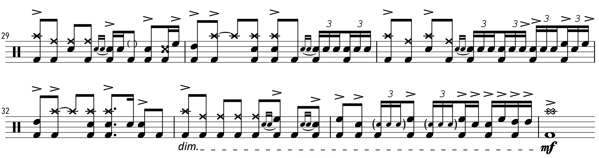

Transcription: "Behind Blue Eyes" — Keith Moon with The Who

It’s finally time for some Keith Moon, the man who got me into drumming. I think Live at Leeds is one of the most important albums for any drummer to listen to, myself especially. I expect that one of these days I’ll take a look at the record; I’m even tempted to do a full note-for-note transcription of it…
But today I have “Behind Blue Eyes”, off of Who’s Next. I heard this song a bunch growing up, but I was inspired to give it a closer listen all these years later after 12Tone posted an analysis of the track back in April:
If the jargon keeps you from making through all 15 minutes, at least skip to the 10 minute mark where he gushes over Moon’s playing.
This is very nearly a full transcription of the tune, since there’s only about a minute of drums; I left out the final few measure that have the ending crashes to keep it down to one page. I’m sure you can figure it out.
You can hear that at this point in his career, Moon was a big fan of the four-stroke-ruff/single-stroke-four joint,* just like many of the 60’s/70’s English rock drummers who fancied the American jazzers. Also to notice is a prominent example of one of Moon’s signature moves: playing steady 8ths on the kick anytime he fills.
There’s an isolated drum track floating around out there, such as this video on YouTube. I’m not sure what the deal is with the slideshow the accompanies it. I’ve seen other videos on the channel, and I think the uploader fancies themselves as some sort of visual artist. Or you could just listen to an MP3 that I nabbed.
There are many subtle details that are revealed by listening to the isolated track. Check out the drags that Moon throws on a lot of his fills, including the fast singles at the finale. Also in the finale is some delicate and graceful triplet action; essentially the same idea as the ruffs from earlier in the tune, but with much more finesse. Have a look:
Also revealed from the isolated track are an array of flubs, usually some sort of stick click/rim click. These are hard to notice on the full mix — Glynn Jons had his work cut out for him. It does irk me when tons of YouTubers comment on these isolated Keith tracks like “who cares if it’s sloppy, it’s fun to listen to!”. I totally agree with the sentiment, but are there really a lot of people complaining that the performance is unlistenable? Nobody brings up that godawful rim click from the guitar solo on Pink Floyd’s “Money”… it’s worse than any Keith Moon flub.
Back to my analysis. On this track in particular, Moon caries a lot of his fills through the downbeat of the next bar, ending on beat 2. You can hear him do a bit of foreshadowing beginning at measure 9, where he starts to throw in crashes on beats 2 and 3. These moves go a long way to give the song some additional edge.
Listening closely to Keith, I noticed that he seems to be sticking to just 2 of his rack toms for most of his fills. By this point, Moon was using his back Premier double bass kit with six toms: three rack toms, and three floor toms (one floor tom on his left and two on his right). All things considered, I don’t think Moon had a very scientific approach to how he played all his toms, and probably just hit what ever felt right.
I’m a bit fascinated by Moon’s philosophy regarding toms — that is, getting three rack toms that are all the same size and tuning them differently. Nobody takes that approach nowadays. I don’t even think any drum manufacturer offers such a factory setup.
One final topic: It triggers me to no end that the Limp Bizkit version somehow 100,000,000+ views on YouTube, much more that the original. I guess those clowns realized that the only way they could come close to being truly emotional was by stealing someone else’s song and playing the way I imagine Squidward Tentacles would play it.

I mean bloody hell, just look at the album artwork:

At least people who take music seriously are in agreement that the cover is garbage. Some highlights from around the internet:
From The Guardian:
...In short, Durst is making an arse of himself and there's none of the old Limp Bizkit knowingness to save him. Even the livelier, rap-metal bits of old (the Snoop Doggy Dogg duet 'Red Light-Green Light') sound out of touch with the current metal landscape. And the cover of The Who's 'Behind Blue Eyes' will make you glad they invented the Stop button.
From AllMusic:
...[Durst] invokes icons callously — "ease your pain/like a melody from Kurt Cobain" — most notably on a boneheaded cover of the Who's "Behind Blue Eyes," turning it into a Staind song with a Speak & Spell on the bridge ("B-I-Z-K-I-T. Say it") and adding insult to injury by misspelling Pete Townshend's name in the credits.
From Ultimate Guitar:
...At the time, Fred Durst said this was a song to show people he there was a person behind his nu-metal frontman facade, but there's something about his big ugly face that strips The Who's original of all magic and sincerity.
...Still, the album's Durst-penned songs, all 15 of them, were nothing compared to the penultimate track: a cover of the Who's 'Behind Blue Eyes.' Durst (wrongly) assumed that his cover of the song would prop up his own material and give the album a defining heft. […] The Who's version, from their classic 1971 album 'Who's Next,' strikes a complex balance of hidden shame and outward aggression. Durst, however, turns the song into a taxing exercise in gloomy self-pity. To cap it all, he adds a Speak & Spell -- the '80s speech-synthesizer toy -- passage to the bridge for no discernible reason.
From Rolling Stone:
...God, where to even start with this piece of shit? I guess I should start back in 1997 when Limp Bizkit's career took off with their cover of George Michael's "Faith." Things were looking pretty grim for the Bizkit in 2003, so they decided to cover another iconic song. They went with The Who's 1971 classic "Behind Blue Eyes." They somehow roped Halle Berry into appearing in the video, possibly using actual rope. It's hard to imagine why else she thought it was a good idea. Just when you think the video couldn't get any worse, Fred Durst and Halle Berry have a really gross make-out session while a Speak N Spell spells out Limp Bizkit. It's one of the worst moments in the history of anything.
At the end of the day, Youtube views are just a matter of time and place. People still remember what impact Keith Moon and the Who have had on music. I wasn’t even aware that Limp Bizkit was cutting records until I wrote this post (they are).
*I think it’s important to point out that, as popular as this lick is, it’s not technically a rudiment and it never has been. The “four stroke ruff” is not on the 13/26/40 rudiment lists, and while the Single Stroke Four is very similar, the true rudimental version has no accents.
"Behind Blue Eyes" on Spotify and Apple Music.
Posted on August 30, 2020
Tags: 2020 • Transcriptions • Keith Moon • The Who